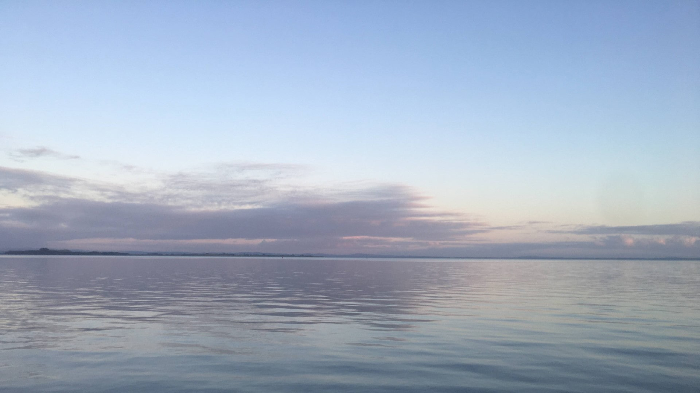

Te Whare Tapa Whā
Wellbeing plan
22 September 2023
Taha Tinana - Physical wellbeing
- Ashtanga yoga two evenings per week
- Mountbiking/city biking on the weekend
- Swimming once a week - when possible
Taha Whānau - Family wellbeing
-
Spend evenings with kids - play table games, homework, craft,
cooking
-
Spend wekends with kids and my partner - hiking, walk on the
beach, mountbiking
- Catchup with friends on the weekend
Taha Hinengaro - Emotional and mental wellbeing
-
30min every morning routine - having coffee in bed with no
distractions - I can't function if I skip this
-
Walk when I feel I need to move from computer or stress situations
- Talk with partner over lunch
- Hug my kids
Taha Wairua - Spiritual wellbeing
- Yoga and meditation
- Time in nature
- Light the candles at church occasionally
Whenua - Interconnections to the land and environment
-
Every day, spend 15 minutes next to the water to breathe and
listen to the silence - at the local beach (above blog image)
-
Look after the frogs - funny creatures...
p.s. kids are trible looking after pets